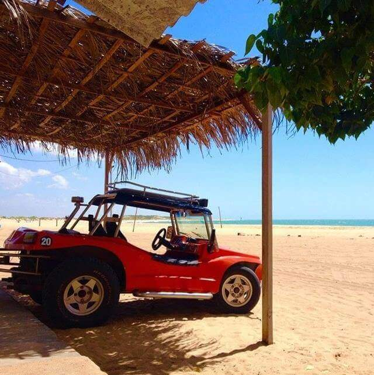
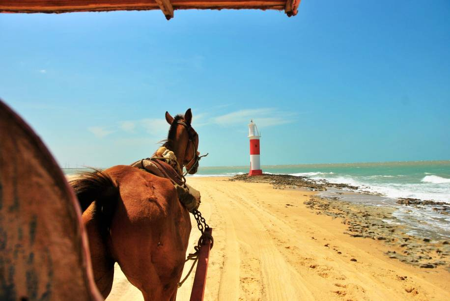
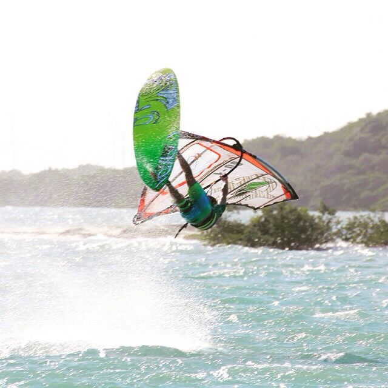
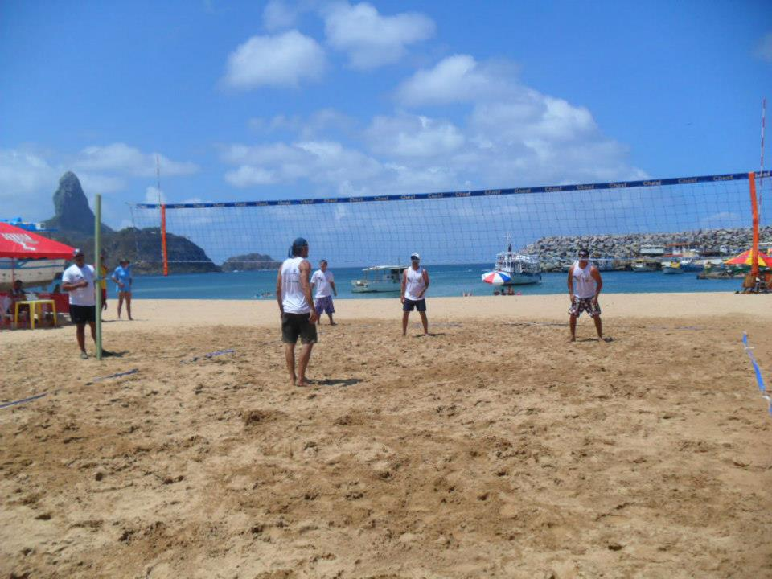
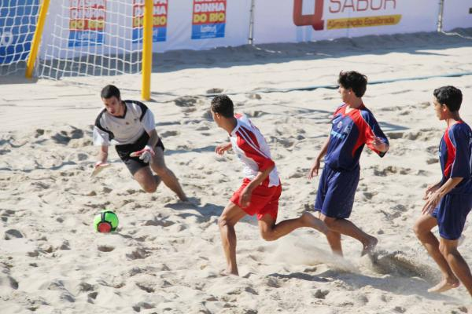
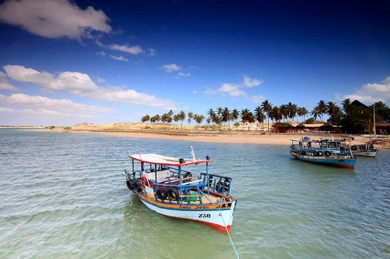
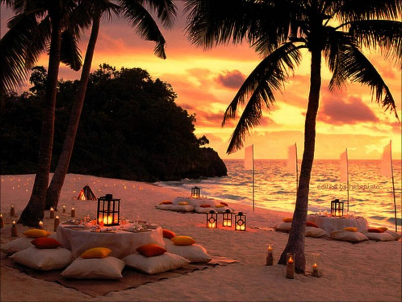
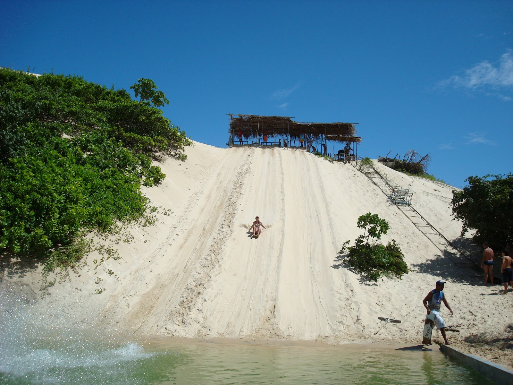
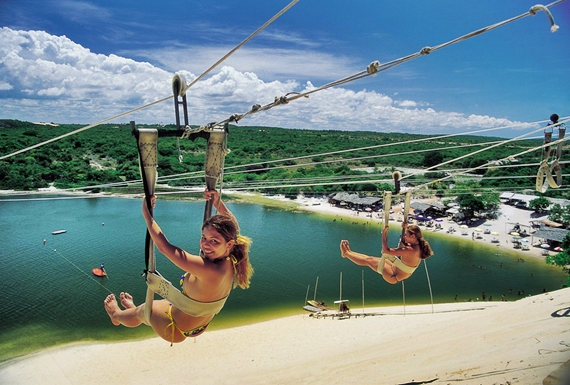

Passeio de buggy
Consiste em um passeio pelas dunas de salinas, comporta até 4 pessoas por passeio,
há possibilidade de adquirir por meio de pacotes completos de viagem ou na propria cidade.
Possui um valor médio de R$ 140,00 por carro.

Passeio de charrete
Acontece nas praias de Galinhos, vai até o farol da praia e acomoda até 4 pessoas.
O valor é cobrado por pessoa e custa cerca de R$ 15,00.

Aula de windsurf
Acontecerão aulas do nível básico da prática de windsurf nas próprias praias da cidade.
O valor é cobrado por aula e custa cerca de R$ 20,00.

Vôlei na praia
Os turistas, assim como os moradores, terão a disponibilidade de praticar vôlei
dentro de uma área na própria praia.

Beach Soccer
Anualmete ocorre um campeonato dessa modalidade que terá no próximo ano sua 12º edição,
além disso haverá uma área reservada para a prática dessa esporte pelas pessoas que
frequentarem a praia.

Passeio de barco
O passeio de barco acontece a cada uma hora, saindo da praia e parando no meio do mar
para que os interessados realizem a prática de mergulho.
O valor é de R$ 100,00 por pessoa.

Lual ao pôr do sol
Será realizado na praia, próximo ao farol de Galinhos, contendo comidas típicas
para aquisicão e músicas calmas. É o passeio ideal para relaxar e admirar a paisagem.

Skibunda
Realizado no rio de Galinhos, nesta atividade os turistas pode descer a duna de areia
sentados em uma espécie de tábua até chegarem na água.
O preço médio é de R$ 15,00 equivalente a três descidas.

Tirolesa
Conhecida como aerobunda, consiste em um cabo aéreo ancorado entre dois pontos,
o praticante se desloca da parte superior da duna até o rio de Galinhos,
através desse cabo.
O custo é de R$ 20,00 a cada três descidas.